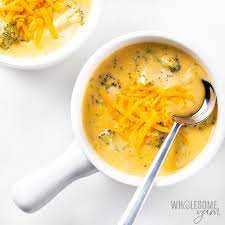

Copy cat Cheddsar and Brocolli Soup

The Brocolli and Cheddar Soup
Ingredients
- 1 tablespoon of butter
- 1/2 onion chopped
- 1/4 cup melted butter
- 1/4 cup flour
- 2 cups milk
- 2 cups chicken stock
- 1 1/2 cups coarsely chopped broccoli florets
- 1 cup matchstick-cut carrots
- 1 stalk celery, thinly sliced
- 2 1/2 cups shredded sharp cheddar cheese
- Salt and ground black pepper to taste
Instructions
- Melt 1 tablespoon butter in a skillet over medium-high heat. Saute onion in hot butter until translucent, about 5 minutes. Set aside.
- Whisk 1/4 cup melted butter and flour together in a large saucepan over medium-low heat. Continue to whisk and cook , adding 1 to 2 tablespoons of milk if necessary to keep the flour from burning, 3 to 4 minutes.
- Gradually pour milk into flour mixture while whisking constantly. Stir chicken stock into milk mixture. Bring to a simmer; cook until mixture is thickened, about 20 minutes. Add broccoli, carrots, sauteed onion, and celery; simmer until vegetables are tender, about 20 minutes.
- Stir Cheddar cheese into vegetable mixture until cheese melts. Season with salt and pepper to taste.